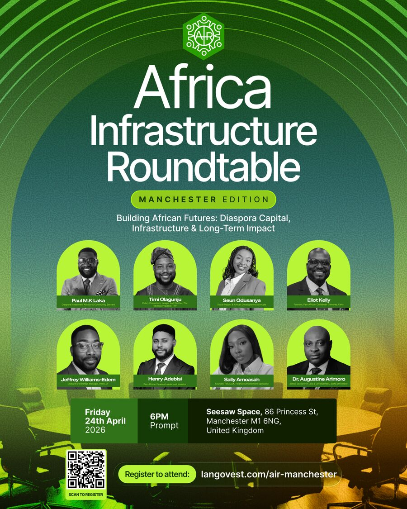
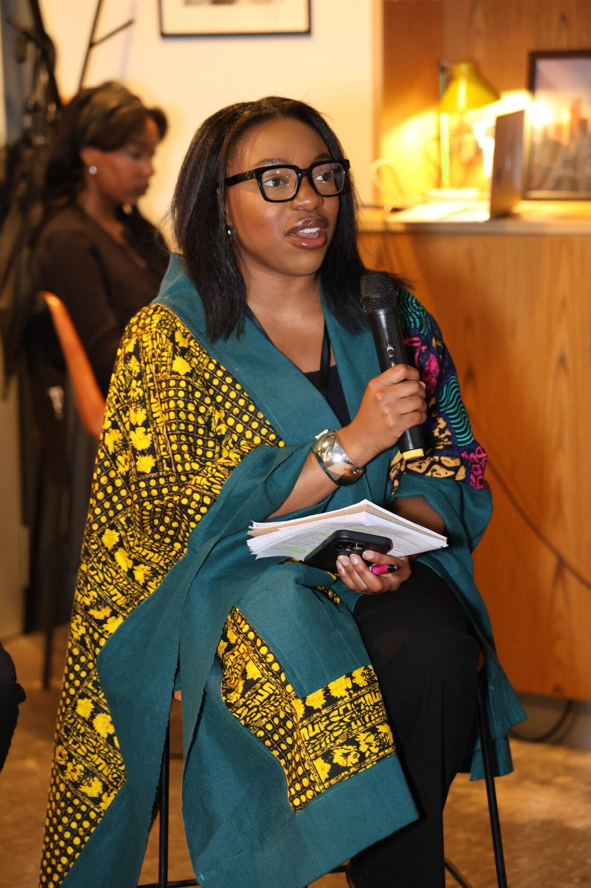
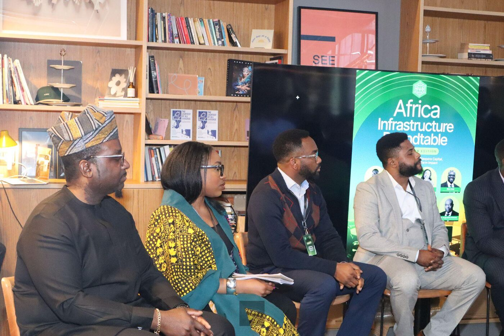
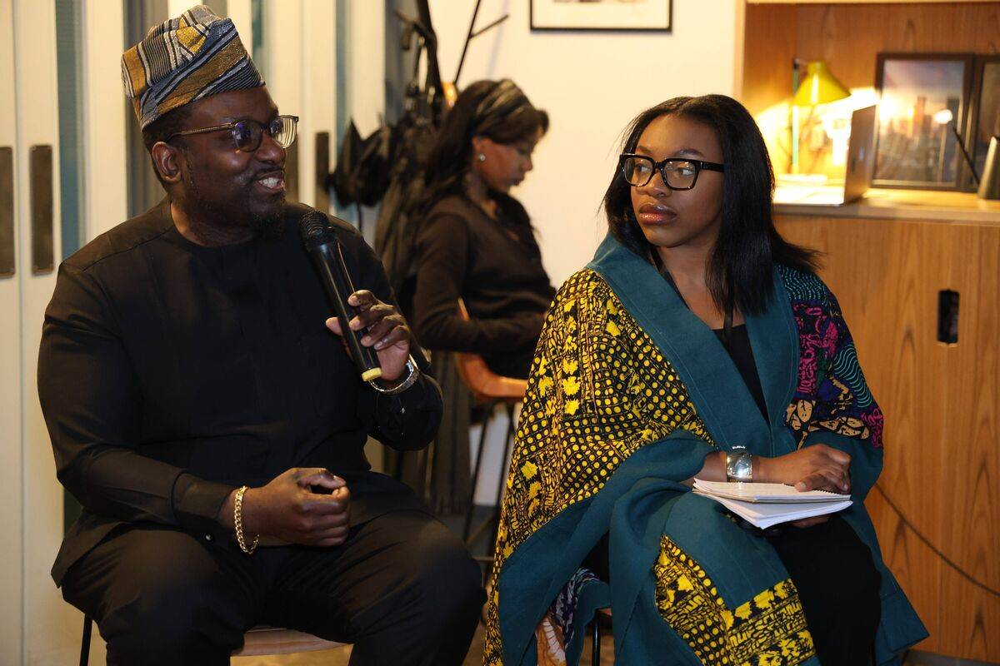
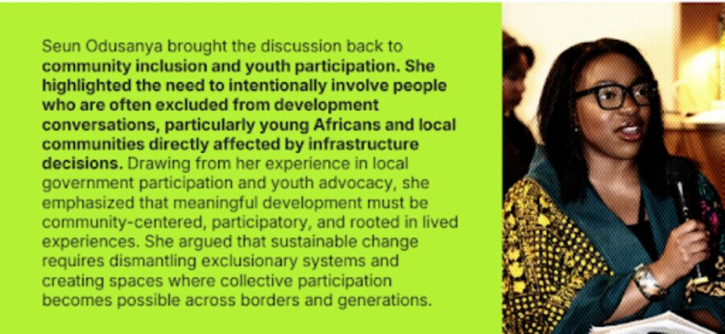
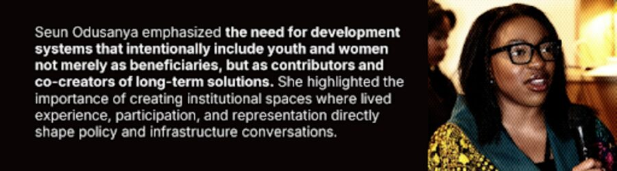
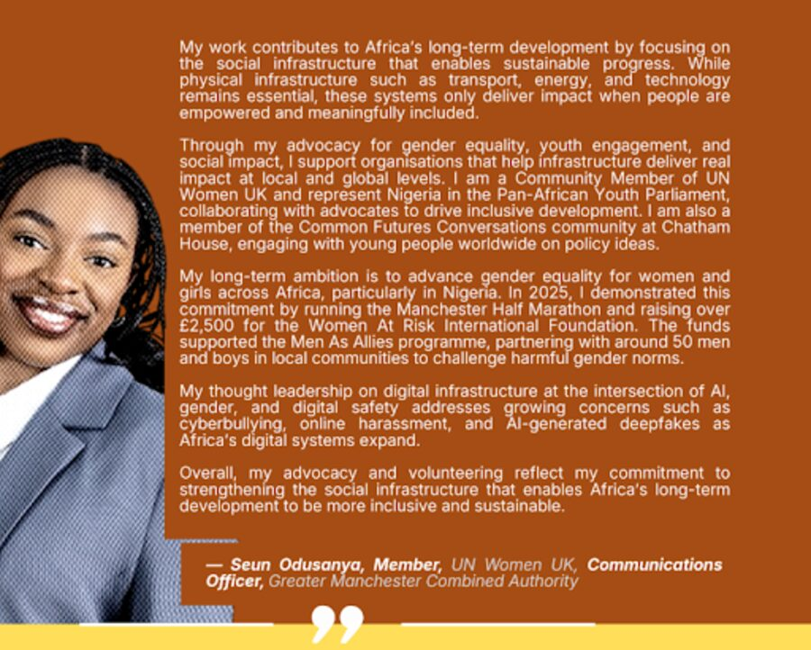
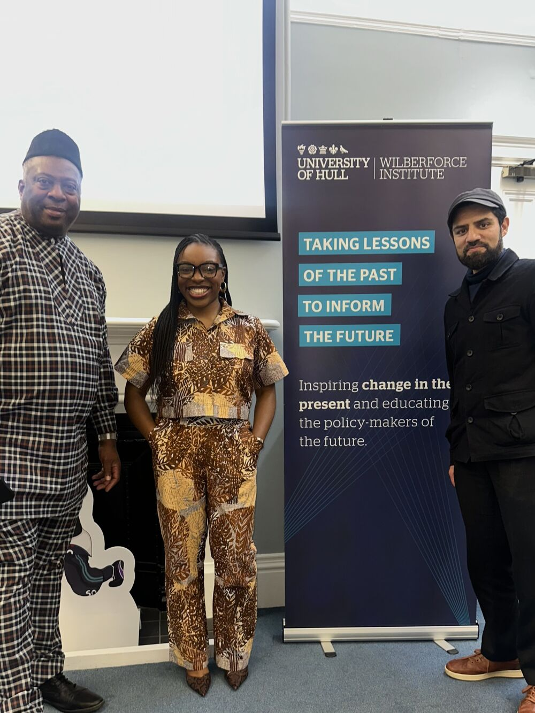

Speaking
On stage and on the record
Seun welcomes opportunities that align with her skills, values and interests, and is currently accepting virtual and in-person speaking engagements.
- First-Class Graduate
- UN Women UK
- Pan-African Youth Parliament
- Theirworld Ambassador
Africa Infrastructure Roundtable 2026
Diaspora, infrastructure and the continent’s future
Seun was selected as a panellist for the Africa Infrastructure Roundtable, contributing to discussions on the role of the diaspora in the continent’s future.
She brought the discussion back to community inclusion and youth participation, highlighting the need to intentionally involve people who are often excluded from development conversations, particularly young Africans and local communities directly affected by infrastructure decisions. Drawing from her experience in local government participation and youth advocacy, she emphasised that meaningful development must be community-centred, participatory, and rooted in lived experiences.







Panel
Youth Wealth and Future Africa Summit
Seun was also a panellist at the Youth Wealth and Future Africa Summit, discussing ways to equip young Africans with insight to thrive in today’s evolving economic landscape.
Talk · Women At Risk International Foundation
Men As Allies (MAA) programme
Seun had the privilege to speak with the men who stepped forward in the Women At Risk International Foundation (WARIF) Men As Allies (MAA) programme.
Inspired by the UN’s 16 Days of Activism against Gender-Based Violence theme, “UNiTE to End Digital Violence Against All Women and Girls”, the future of Nigeria’s digital space must be safe and inclusive, with men playing a vital role in shaping it.
As she shared in the video, ending violence, physical or digital, requires action from everyone: governments, communities, and organisations. But it especially needs men who are willing to challenge inequality, confront harmful norms, and help prevent violence against women and girls.


Invite Seun to speak
Seun welcomes opportunities that align with her skills, values and interests. She is currently accepting virtual and in-person speaking engagements.